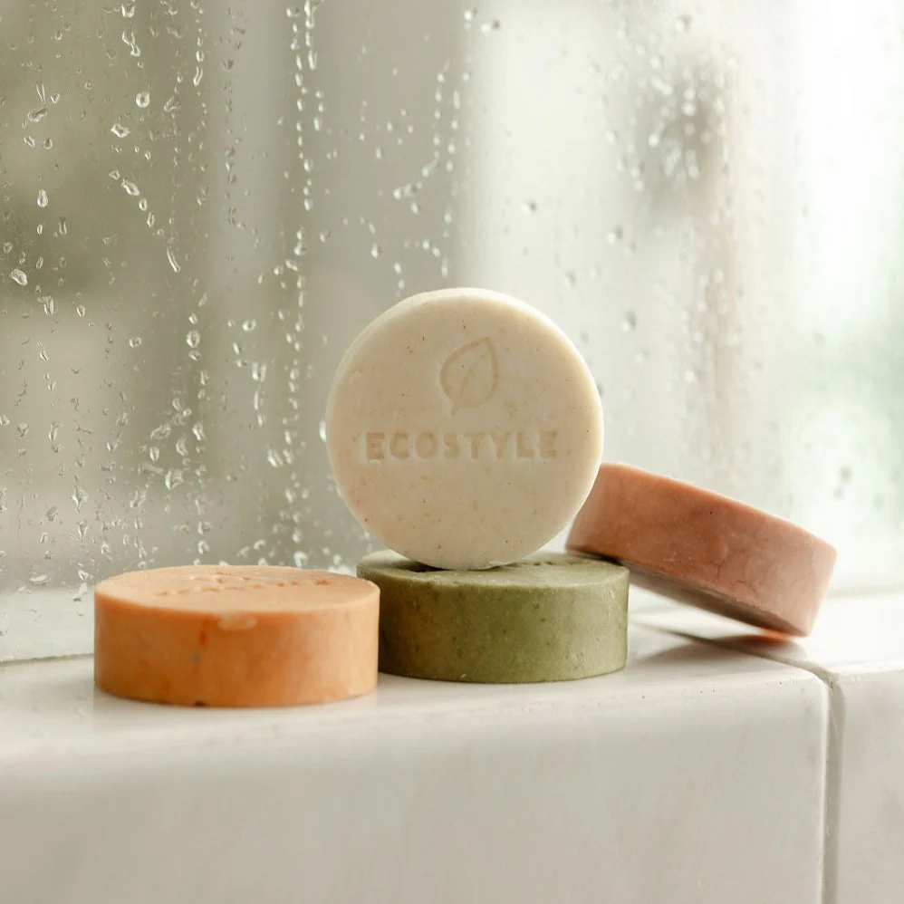
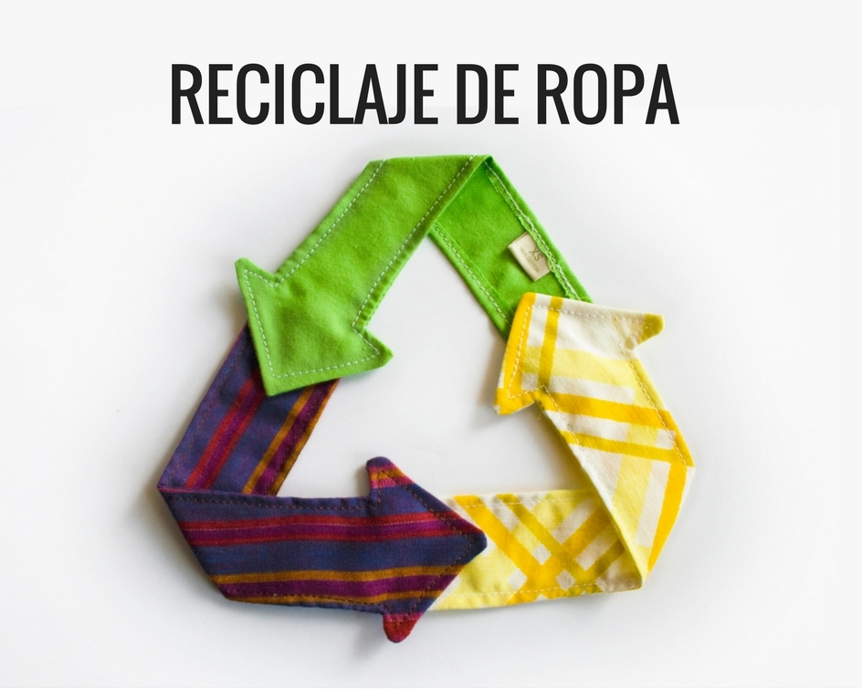
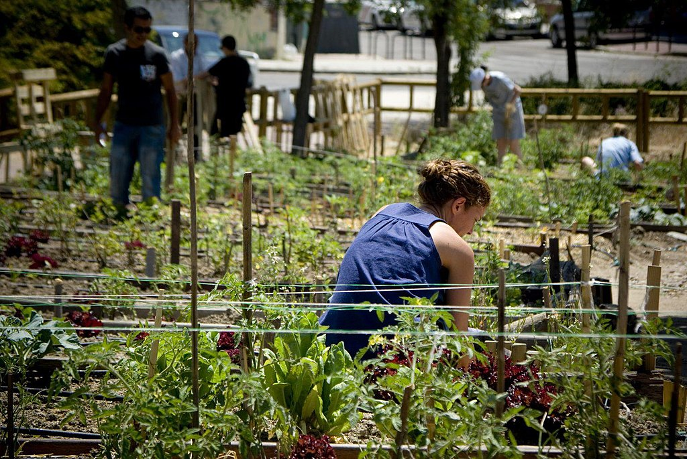

Impulsamos ideas innovadoras que demuestran que la rentabilidad económica puede convivir con el bienestar social y la regeneración ambiental.
Ver Proyectos de Ejemplo
Cosmética natural concentrada que elimina por completo la necesidad de envases plásticos y reduce el desperdicio de agua en su fabricación.

Transformación de retazos y desechos textiles industriales en nuevas prendas de alta calidad y diseño contemporáneo mediante upcycling.

Red de huertos verticales comunitarios instalados en techos baldíos para producir alimentos orgánicos y locales de bajo costo.